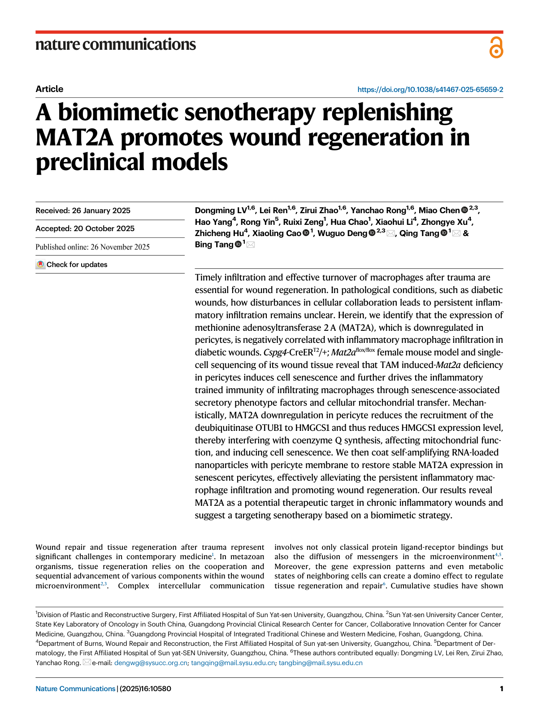
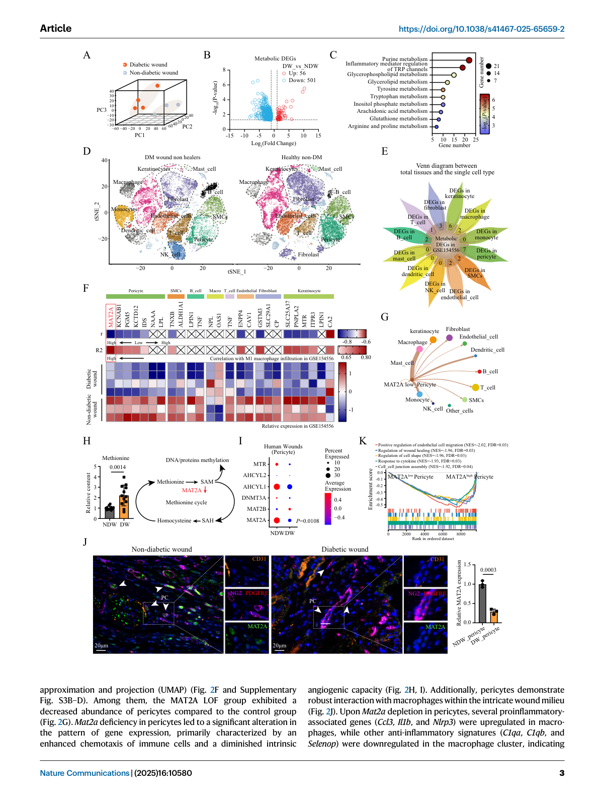
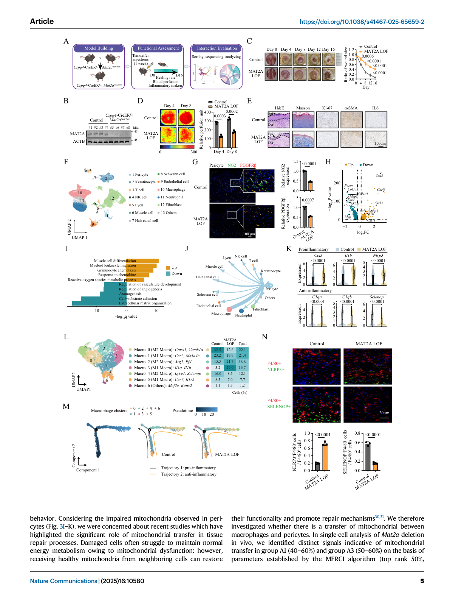
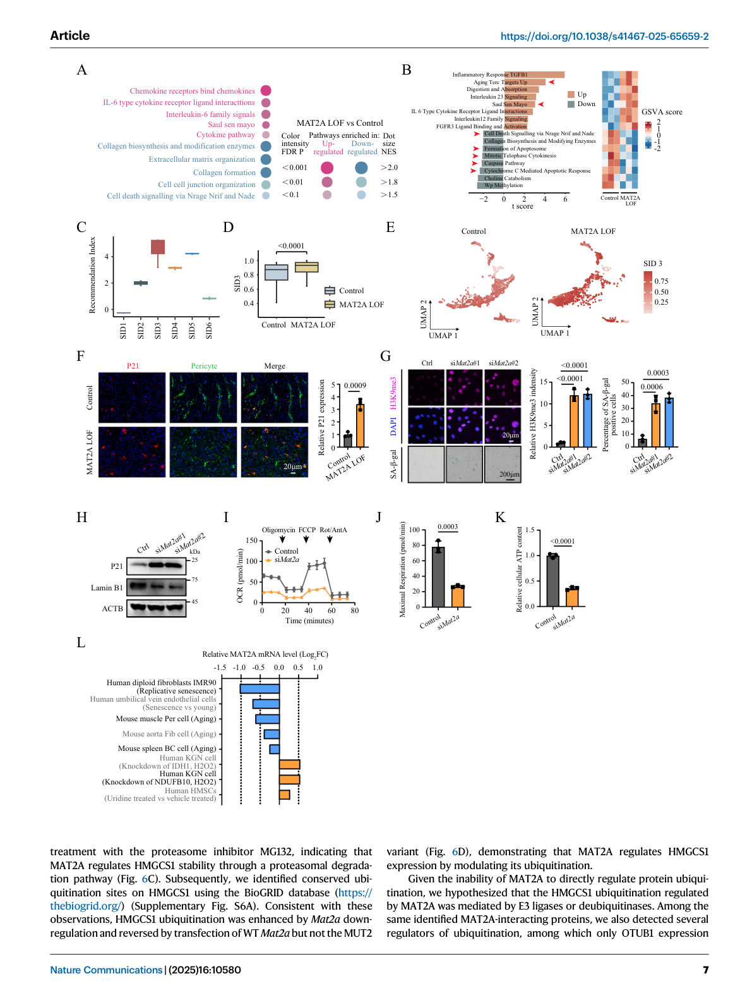
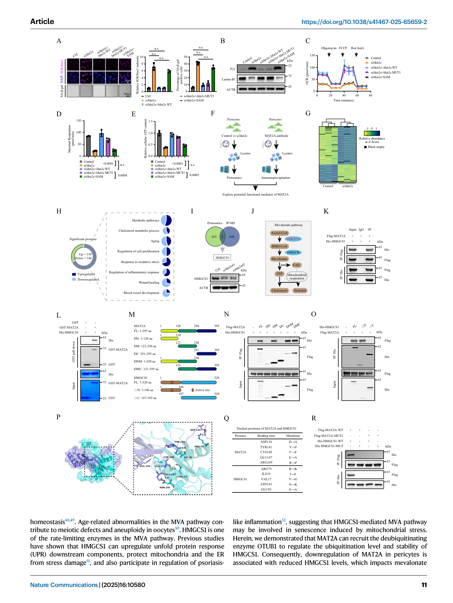
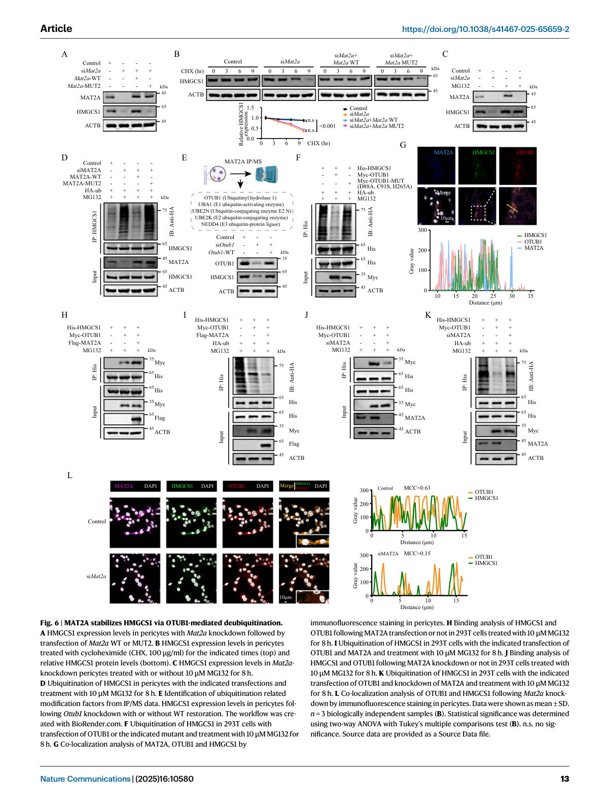
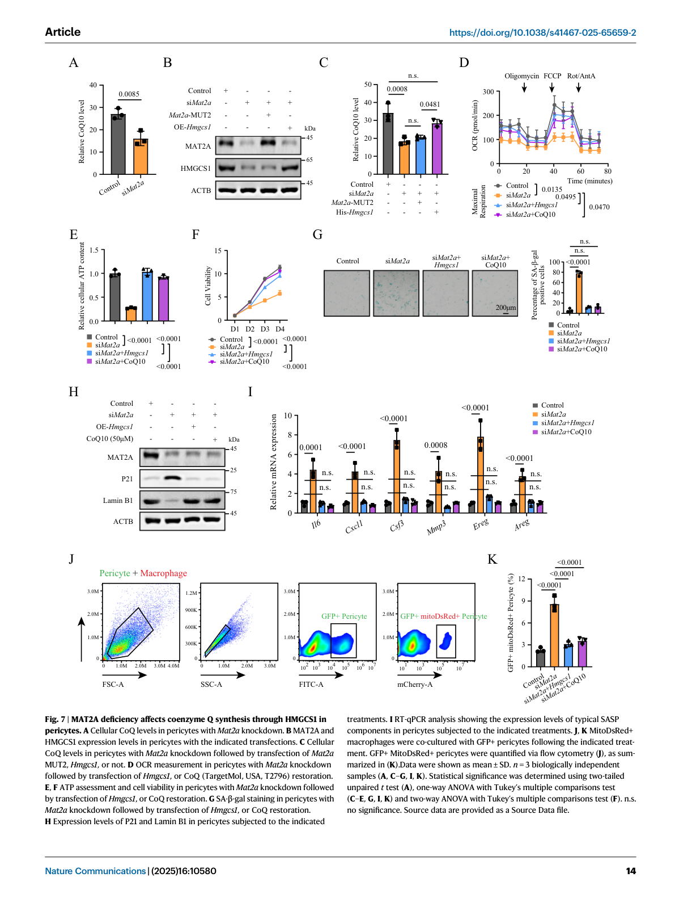
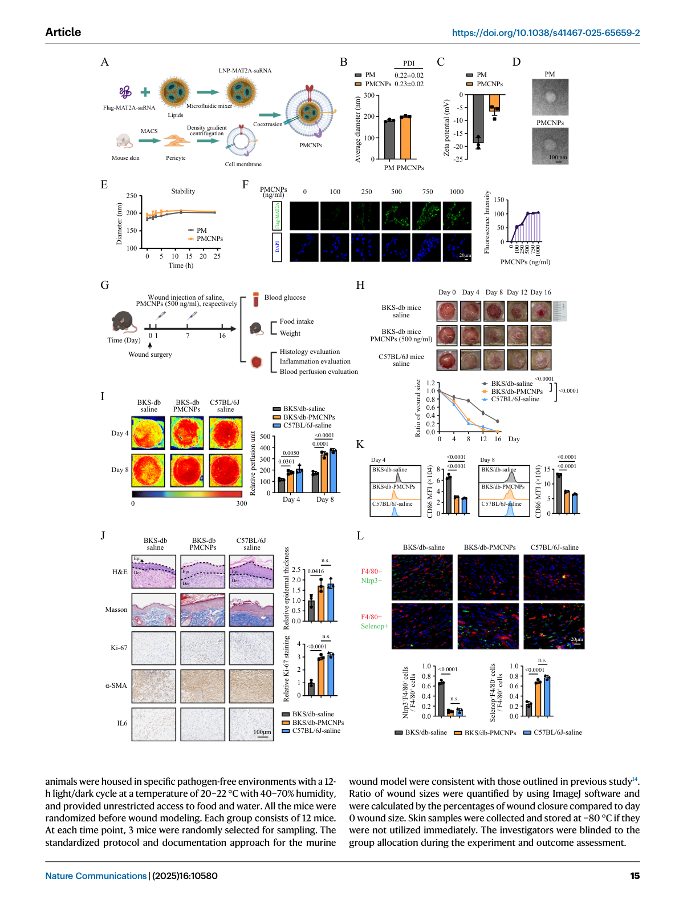
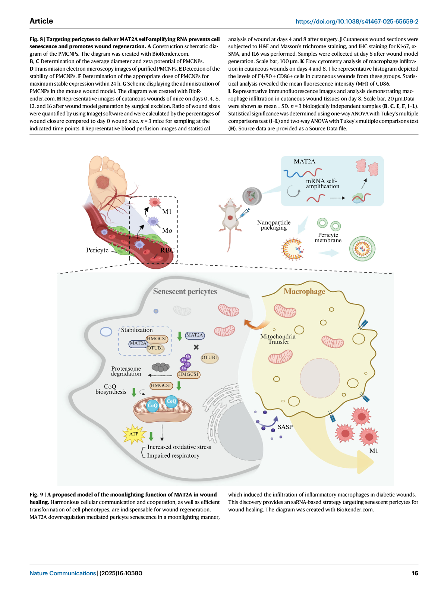

中文译名：仿生衰老疗法补充 MAT2A 促进临床前模型中的伤口再生 发表期刊：Nature Communications (2025) 16:10580 DOI：10.1038/s41467-025-65659-2 第一作者：Lv Dongming, Ren Lei, Zhao Zirui, Rong Yanchao（并列第一作者） 通讯作者：Deng Wuguo, Tang Qing, Tang Bing 单位：中山大学附属第一医院整形外科、中山大学肿瘤防治中心
核心发现摘要#
本研究揭示了一个全新的MAT2A代谢"兼职（moonlighting）"功能——通过调控HMGCS1的稳定性而非其经典代谢酶活性——介导细胞衰老与伤口微环境慢性炎症，为糖尿病等慢性难愈合伤口提供了全新的治疗靶点和仿生策略。
研究逻辑线：
糖尿病伤口 → 周细胞MAT2A下调 → OTUB1↓ → HMGCS1不稳定 → CoQ↓ → 线粒体功能障碍 → 细胞衰老
↓
SASP分泌 + 线粒体转移
↓
巨噬细胞炎症训练免疫 → 慢性炎症 → 伤口不愈合
↓
周细胞膜包被MAT2A-saRNA纳米颗粒 → MAT2A恢复 → 伤口再生
1. 背景与科学问题#
1.1 糖尿病伤口的临床挑战#
- 糖尿病伤口是全球重大医疗问题，5年生存率高于许多常见恶性肿瘤
- 是非外伤性下肢截肢的主要原因
- 关键病理特征：炎症性巨噬细胞（Pro-inflammatory M1 macrophage）持续浸润，替代性活化M2巨噬细胞周转受阻
1.2 研究切入点#
- 糖尿病伤口中甲硫氨酸（methionine）积累，但甲硫氨酸循环中只有MAT2A显著下调
- 代谢酶的"兼职功能"（moonlighting function）日益受到关注——代谢酶可独立于其催化活性发挥信号调控作用
1.3 核心假设#
MAT2A在周细胞（pericyte）中的下调，通过非经典途径驱动细胞衰老和巨噬细胞炎症化，最终导致糖尿病伤口慢性炎症和愈合障碍。
2. 主要结果#
Fig. 1 | 候选代谢酶筛选与MAT2A的发现#
Figure:

[本地图片未同步]
从GSE154556Bulk转录组数据（GSE165816 scRNA-seq交叉验证）：
- 糖尿病伤口vs非糖尿病伤口：501个代谢基因下调，56个上调
- 代谢通路富集：嘌呤代谢、TRP通道炎症调节、甘油磷脂代谢等
- 25个候选代谢基因在组织和单细胞层面同时下调
- 相关性分析锁定MAT2A：在周细胞中下调最显著，且与M1巨噬细胞浸润评分负相关性最强
甲硫氨酸循环：
甲硫氨酸 → [MAT2A] → SAM → SAH → 同型半胱氨酸
↓（下调）
糖尿病伤口中MAT2A↓，甲硫氨酸↑
关键图注：MAT2A^low周细胞富集的通路包括：内皮细胞迁移负调控（NES=-2.02）、伤口愈合调控（NES=-1.96）、细胞因子响应（NES=-1.93）
Fig. 2 | Mat2a条件性敲除损害伤口愈合并改变巨噬细胞表型#
Figure:

动物模型：Cspg4-CreERT2 × Mat2a^fl/fl（C57背景，tamoxifen诱导周细胞特异敲除）
表型验证：
- 伤口愈合速率显著减慢（Day 4/8/12/16）
- 血流灌注减少
- 表皮变薄、Ki-67↓、α-SMA↓、IL6↑
scRNA-seq分析（MAT2A LOF vs Ctrl, 各n=3）：
- 67,945个细胞，27,106个表达基因
- 12种主要细胞类型：周细胞、角质形成细胞、T细胞、B细胞、内皮细胞、巨噬细胞、中性粒细胞、成纤维细胞等
- LOF组周细胞比例下降
- 周细胞下调通路：免疫细胞趋化↑，血管生成↓
- 巨噬细胞重聚类：7个亚群
- M1促炎亚群（Macro 1/3/5）增加：Ccl3↑、Il1b↑、Nlrp3↑
- M2抗炎亚群（Macro 0/2/4）减少：C1qa↓、C1qb↓、Selenop↓
- 轨迹分析确认：Il1a^hi Il1b^hi促炎巨噬细胞增多，抗炎巨噬细胞减少
Fig. 3 | MAT2A下调诱导周细胞衰老#
Figure:

Mat2a敲除后周细胞的转录组变化：
- 上调通路：细胞因子/趋化因子相关
- 下调通路：细胞外基质重塑
- GSVA分析：细胞衰老相关基因集显著↑，细胞凋亡通路被抑制
SenCID算法（ senescence cell identification）：SID3最适合评估周细胞衰老
- LOF组SID3评分显著高于对照组
体外实验（siMat2a转染小鼠皮肤周细胞）：
- CCK-8、EdU、细胞周期：增殖↓，周期阻滞
- SA-β-gal染色↑（衰老标志）
- H3K9me3/SAHF染色↑（衰老相关异染色质灶）
- P21↑，LaminB1↓（核形态标志）
- 线粒体呼吸↓，ATP↓
数据库验证（Aging Atlas）：MAT2A在多种衰老细胞中下调，在抗衰老处理（uridine）后上调
Fig. 4 | 衰老周细胞通过双重机制激活炎症巨噬细胞#
Figure:

旁分泌途径（SASP因子）：
- Mat2a缺失→周细胞SASP因子↑（Saa3, Cxcl5, Cxcl3, MmP3, Il1b, Ccl4, Cxcl1等）
- 共培养实验证实：仅非接触共培养条件下，巨噬细胞促炎基因也上调
线粒体转移途径（接触共培养效应更强）：
- MERCI算法检测线粒体转移信号：Control组A1(40-60%)和A3(50-60%)显著高于LOF组
- 衰老周细胞将受损线粒体转移给巨噬细胞
- 巨噬细胞获得受损线粒体→代谢重编程→炎症训练免疫（Trained Immunity）
配体-受体互作分析：
- Ccl4-Ccr5, Csf1-Csf1r, Il6-(Il6r+Il6st), C3-C3ar1, Angptl4-Sdc4
Fig. 5–6 | MAT2A通过OTUB1介导HMGCS1去泛素化稳定HMGCS1#
Figures:



机制核心：
- MAT2A与HMGCS1的直接结合：aa 121-250为MAT2A主要结合域，HMGCS1的N端（aa 1-186）为结合区
- 结合位点突变（MUT2）：MAT2A K134/K141/K147/K149/K169位点突变→与HMGCS1互作消失
- HMGCS1稳定性调控：WT MAT2A可在CHX处理下维持HMGCS1稳定；MUT2不能
- 泛素化调控：Mat2a敲低→HMGCS1泛素化↑；MG132（蛋白酶体抑制剂）处理可逆转
OTUB1（去泛素化酶）：
- MAT2A通过招募去泛素化酶OTUB1稳定HMGCS1
- Mat2a敲低→OTUB1对HMGCS1的招募↓→HMGCS1泛素化增强→蛋白酶体降解
下游效应（HMGCS1→CoQ合成）：
- HMGCS1下调→辅酶Q（Coenzyme Q, CoQ）合成↓→线粒体功能障碍→细胞衰老
Fig. 7–8 | 仿生纳米颗粒治疗#
Figure:

治疗策略：
MAT2A自扩增RNA (saRNA) + 脂质纳米颗粒 (LNP)
↓
表面包被：周细胞膜（Pericyte Membrane）
↓
实现：精准靶向衰老周细胞 + 稳定高效表达MAT2A
结果：
- 恢复衰老周细胞中MAT2A表达
- 降低HMGCS1泛素化，恢复HMGCS1蛋白水平
- 恢复CoQ合成和线粒体功能
- 减轻慢性炎症巨噬细胞浸润
- 促进伤口再生
Fig. 9 | 机制模型#
Figure:

整体机制模型：
糖尿病环境 → 周细胞MAT2A表达↓ → ① OTUB1对HMGCS1的招募↓ → HMGCS1不稳定 → CoQ↓ → 线粒体功能障碍 → 细胞衰老 ② 衰老周细胞释放SASP因子 + 转移受损线粒体给巨噬细胞 → 巨噬细胞炎症训练免疫 → 慢性炎症 → 伤口不愈合
治疗：周细胞膜包被MAT2A-saRNA纳米颗粒 → 恢复MAT2A → 阻断上述链条 → 伤口再生
3. 实验方法#
3.1 动物模型#
- 周细胞特异性Mat2a敲除：Cspg4-CreERT2; Mat2a^fl/fl（tamoxifen诱导）
- 伤口模型：手术切除皮肤
3.2 细胞实验#
- 小鼠皮肤周细胞分离（免疫磁珠+流式）
- Mat2a siRNA敲低
- 周细胞-巨噬细胞共培养（接触/非接触）
3.3 组学分析#
- Bulk RNA-seq（GSE154556）
- scRNA-seq（GSE165816 + 自身数据）
- 代谢组学
3.4 关键检测#
- SA-β-gal染色
- SAHF（H3K9me3）染色
- Seahorse线粒体呼吸检测
- 线粒体转移检测（MERCI算法）
- Co-IP、CHX、MG132实验
- 蛋白泛素化检测
3.5 治疗验证#
- 周细胞膜包被MAT2A-saRNA LNP纳米颗粒
- 体内伤口愈合评估
4. 创新点与意义#
4.1 科学发现#
- 首次揭示MAT2A的代谢兼职功能：不依赖其经典催化活性（甲硫氨酸→SAM），而是通过结合HMGCS1招募OTUB1，稳定HMGCS1，调控CoQ合成
- 周细胞衰老→巨噬细胞炎症训练免疫的跨细胞病理链条
- 双重机制（SASP + 线粒体转移）介导细胞间通讯
4.2 临床转化#
- 靶点新颖：MAT2A作为慢性炎症伤口的治疗靶点此前未被报道
- 仿生策略：周细胞膜包被纳米颗粒，实现精准靶向，避免全身副作用
- 自扩增RNA：相比传统mRNA，表达更持久，剂量更低
4.3 代谢新视角#
- 代谢酶的"兼职功能"在组织再生中的重要作用
- 代谢-衰老-免疫的交叉调控网络
5. 局限性#
- 主要数据来自小鼠模型，临床转化仍需进一步验证
- MAT2A的HMGCS1结合口袋的药物设计仍需探索
- 周细胞膜来源的规模化制备存在挑战
- 长期安全性数据尚不充分
6. 关键文献#
| 方向 | 关键文献 |
|---|---|
| 糖尿病伤口巨噬细胞 | 主流研究（Ref 13, 20） |
| 代谢酶兼职功能 | Ref 16, 17 |
| 线粒体转移 | Ref 30, 31 |
| 衰老细胞与SASP | Ref 26-29 |
| OTUB1去泛素化 | - |
| HMGCS1与CoQ | Ref 48, 49（MVA通路） |
| 抗衰老（uridine） | Ref 25 |
| SenCID衰老评分 | Ref 22 |
| MERCI线粒体转移 | Ref 32 |
7. 附件说明#
- PDF全文：Zotero ItemID 1897
- 所有Figure页面截图：attachments/Page_01.png ~ Page_16.png
- Extracted全文文本：extracted_text.txt
文献添加时间：2026-04-13 笔记整理：Claude Code